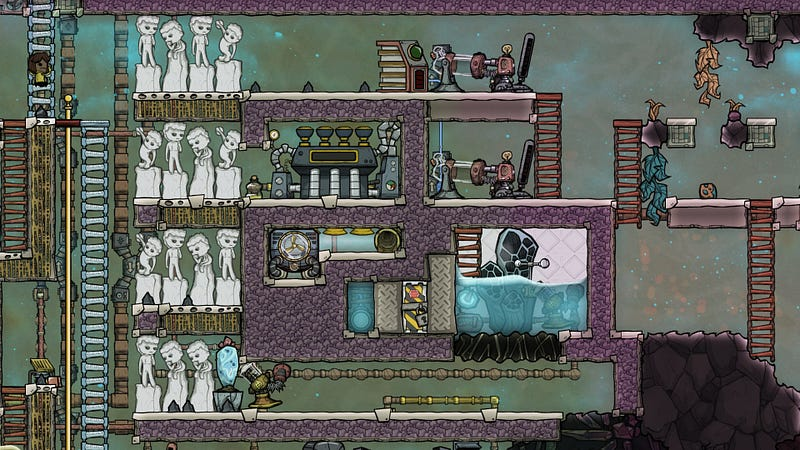
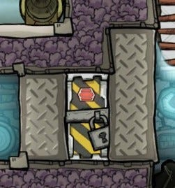
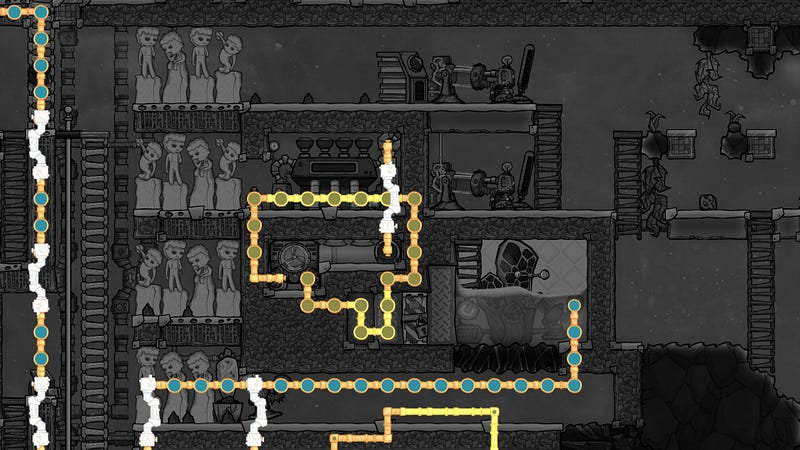
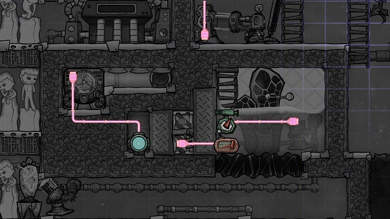
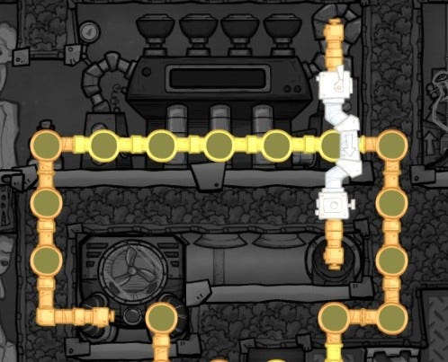

Taming The (Cool) Steam Geyser
Taming The (Cool) Steam Geyser
This is a design to make sure that the Steam from a (Cool) Steam Geyser condenses into Water in a timely manner, while absorbing the excess thermal energy. We deliberately use electricity instead of other means such as Carbon Skimmers, to make sure the system acts in a predictable manner. (Based on the design by Francis John)
Please ignore the Hydrogen Generators, they are not part of this design.

The gist of this design is the vacuum-door contraption. It is very simple, and indeed if you master how to use it, you can pretty much tame any sort of heating room.
The idea behind the vacuum-door is to simply sandwich an automatic airlock door between highly conductive materials. When the airlock is open, those tiles become a vacuum, and therefore does not conduct heat.

In this picture, the door is closed, so we’re conducting heat between the two rooms on either side. This is how we keep the temperature inside the room to the right under control
How to Build
First, you want to build a liquid lock around the Steam Vent, so that you can make the room a vacuum. The vacuum area should cover the entire setup, including the Steam Turbine, Aqua Tuner, and the water heat sink.
Make sure to place all required parts including the Thermo Sensor, Hydro Sensor, Liquid Pump, Liquid Pipes, Temperature Shift Plates, Automation wires, Conductive wires, etc BEFORE you close off any of the rooms. Work your way up from the bottom.
You should use materials that can withstand temperatures over 100 degrees celsius. So for example, don’t install a copper Liquid Pump. The Aqua Tuner should be made out of steel.
One minor note, I used Gold (conductivity=60) Metal Tiles around the door because I didn’t have enough materials. If you have plenty of Diamond, you should definitely consider using Glass Tiles made out of Diamonds (conductivity=80)

For the heat sinks, use whatever means that match your situation to fill them with water, then seal each chamber. At
One thing you should note when you build this setup: you should place enough water that the entire chamber where the Aqua Tuner resides is completely covered with Water, then seal it.

You should place the Steam Turbine as the last thing in the build.
Once you are done building, pump some Polluted Water to the loop to the left, and send some electricity!
Brief Explanation
To the right of the vacuum door is the Cool Steam Vent, which generates steam at around 100 degrees celsius.
To the left is a room filled with water, and the pipe from the Aqua Tuner, which carries polluted water at about 0 degrees celsius.
When the room in the right side is heated up to a certain point, in this case somewhere around over 80 to 90 degrees celsius, the door is set to shut. This allows the coolness from the left side to transfer to the right, and eventually we hit 97 degrees celsius, which is the liquefaction temperature for steam, and we start accumulating water around the geyser.
The Temperature Shift Plates around the geyser also helps with the conversion.
To cool the left side, we use an Aqua Tuner, which is only triggered if the contents of the pipe is above a certain threshold. This can be anything as long as we are well clear of the freezing point for Polluted Water, which is -20.65 degrees celsius. In my case, 0 degrees seems to work just fine.
This Polluted Water just keeps cycling through, absorbing heat from the sink to the left of the door.
Obviously the Aqua Tuner itself will be hot. This heat is absorbed by the Steam Turbine.
After a while the water in this chamber will be hot enough (over 150 degrees celsius) and the Steam Turbine will spin. Note that you should not really expect the Steam Turbine to be a reliable source of energy. At least in this setup, the Steam Turbine is a big magical heat sink, where the thermal energy somehow dissipates.
Before you build the Steam Turbine, make sure to build the liquid pipes properly. The Steam Turbine itself must be cooled in order for it to consume the thermal energy emitted by the Aqua Tuner, so we use the same coolant that we use to cool the water below to cool the Steam Turbine itself.

…And that’s it! You need to be slightly careful as to the order of building things, but in general this is a very simple setup.
Enjoy!